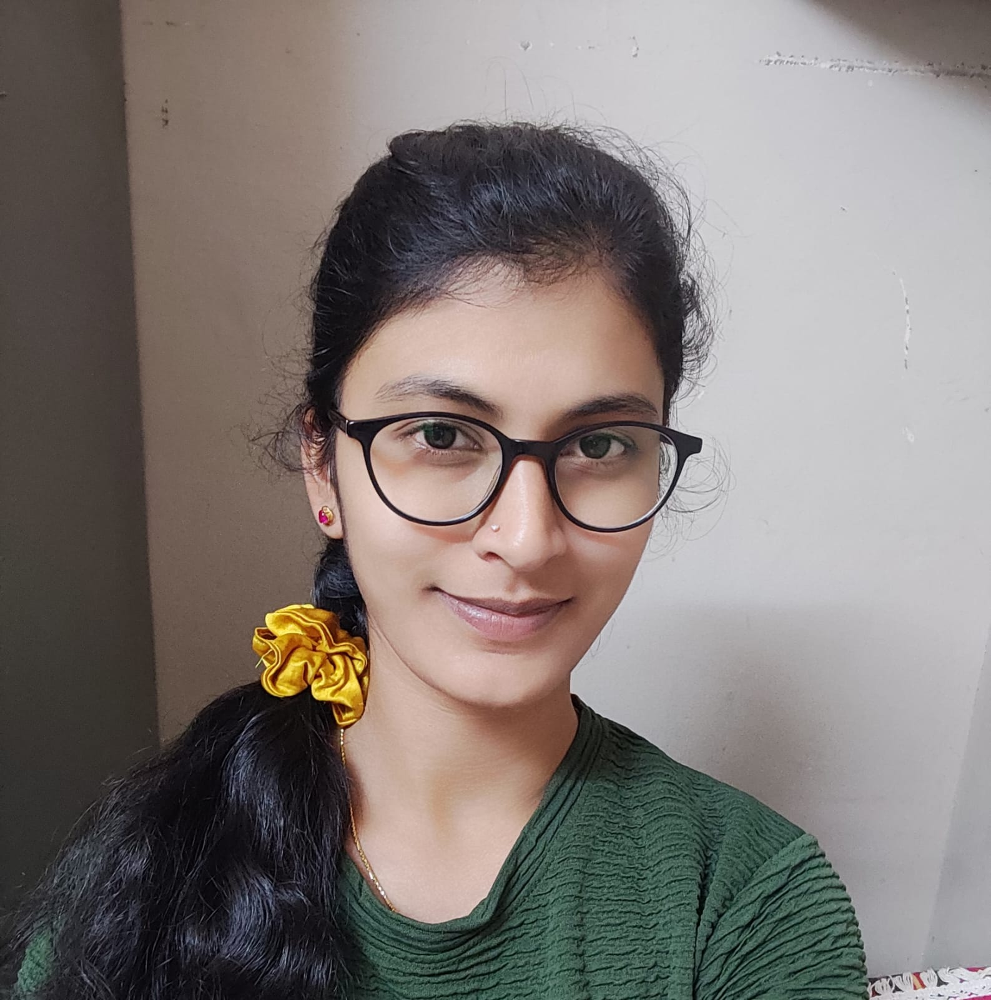

Languages & core
Java · SQL basics · DSA basics
Information Science Engineering student
I’m Prarthana G B, a student in Shivamogga who enjoys turning ideas into useful digital experiences with Java, SQL, machine learning, and full-stack web development.

✦Currently exploring
A little about me
My career objective is to grow as a software professional by applying my foundations in Java, SQL, machine learning, and full-stack development to meaningful problems.
I’m currently pursuing a BE in Information Science Engineering at Jawaharlal Nehru National College of Engineering, Shivamogga. I value clear thinking, steady improvement, and building interfaces that feel as good to use as they are to understand.
View my journey →My toolkit
From core concepts to hands-on tools, I’m building a practical foundation for thoughtful software.
Java · SQL basics · DSA basics
Operating Systems · Computer Networks · Machine Learning
Full Stack Web Development · GitHub · VS Code
MS Excel · Android Studio · Google Colab
Selected work
Three projects that reflect my interest in useful products, intelligent systems, and solving real problems.
Full-stack application
A focused workspace for placement readiness with JWT and bcrypt authentication, Node.js and Express REST APIs, and MongoDB-backed modules for tasks, topics, certifications, notes, profile, and dashboard progress.
Computer vision concept
An ongoing project exploring real-time threat detection and emergency alerts to support safer public spaces.
Predictive analytics
An ML model using healthcare datasets, preprocessing, and classification to explore accessible, data-informed prediction.
Education & highlights
Jawaharlal Nehru National College of Engineering, Shivamogga
CGPA 9.24 / 10Pre-University education
93.67%Foundational education
90.08%Certificate of Merit for academic excellence by the Institution's Innovation Cell.
Certifications
Languages
Interactive profile
Explore my one-page resume for a concise view of my education, skills, projects, certifications, and achievements.
Start a conversation
I’m always open to learning, collaborating, and hearing about thoughtful technology projects.